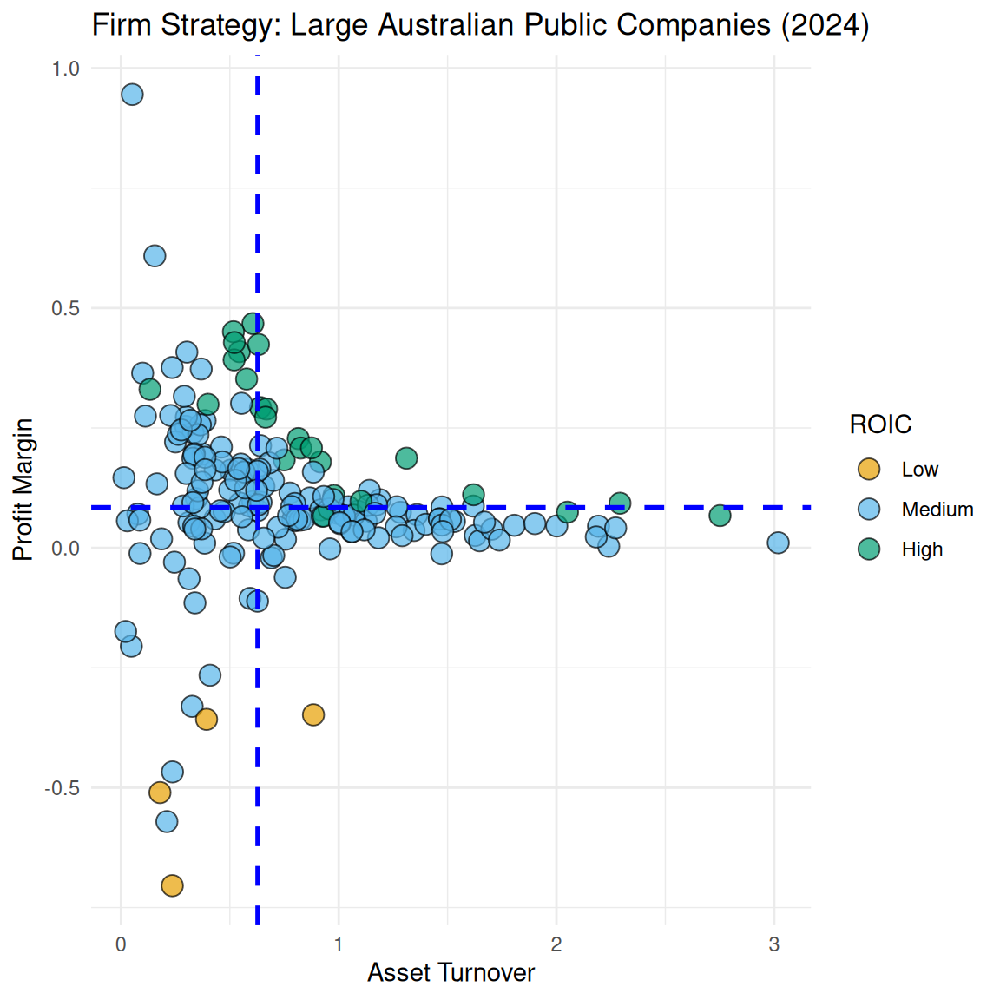
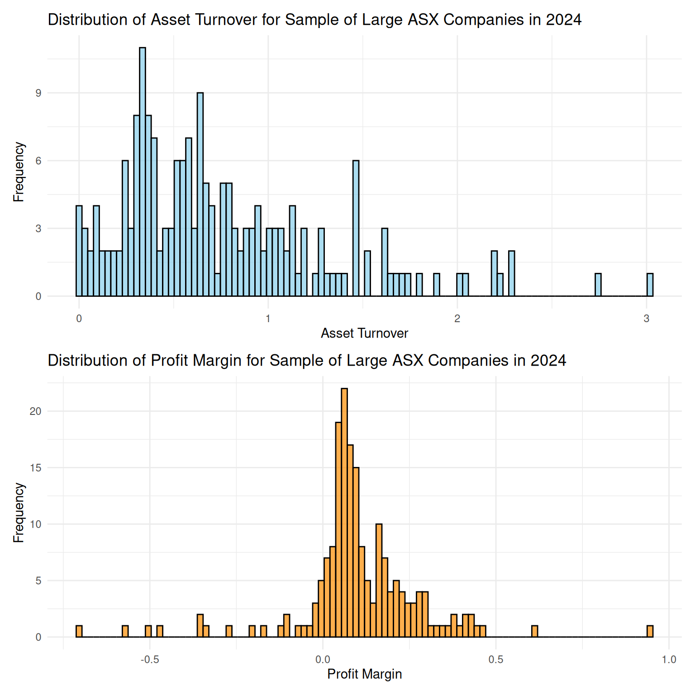
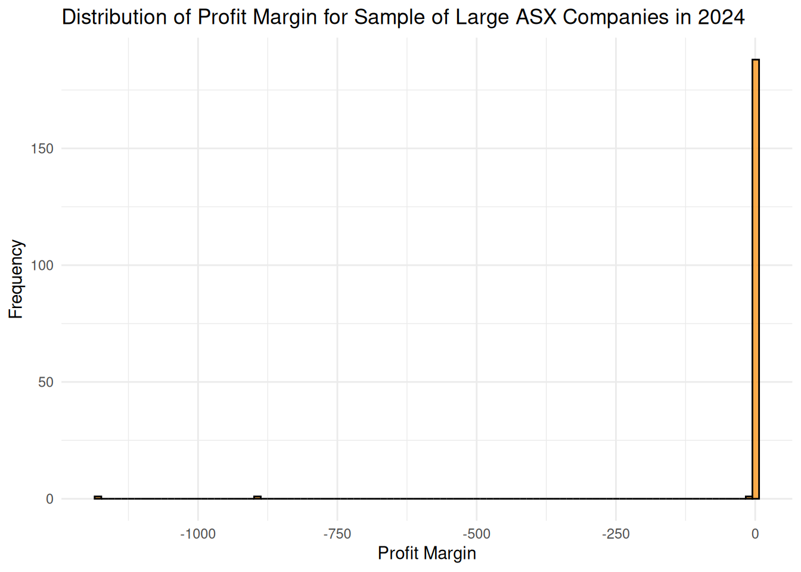
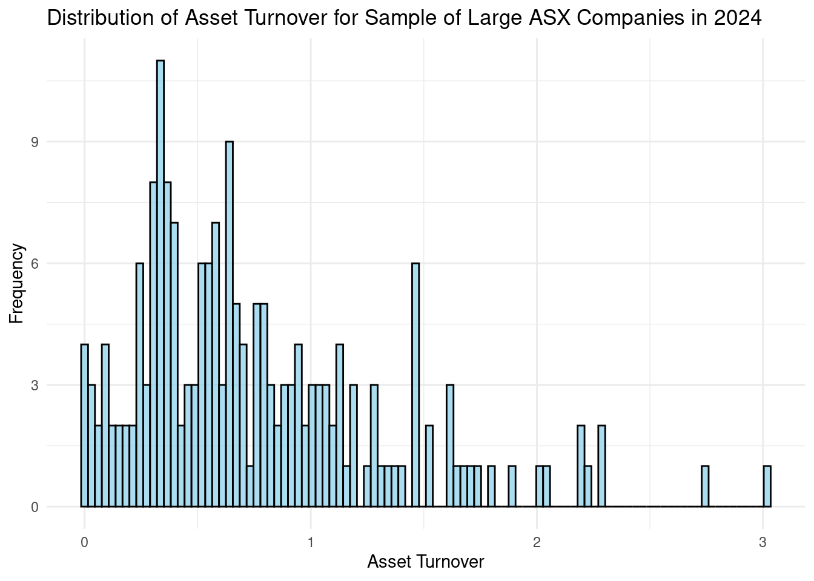
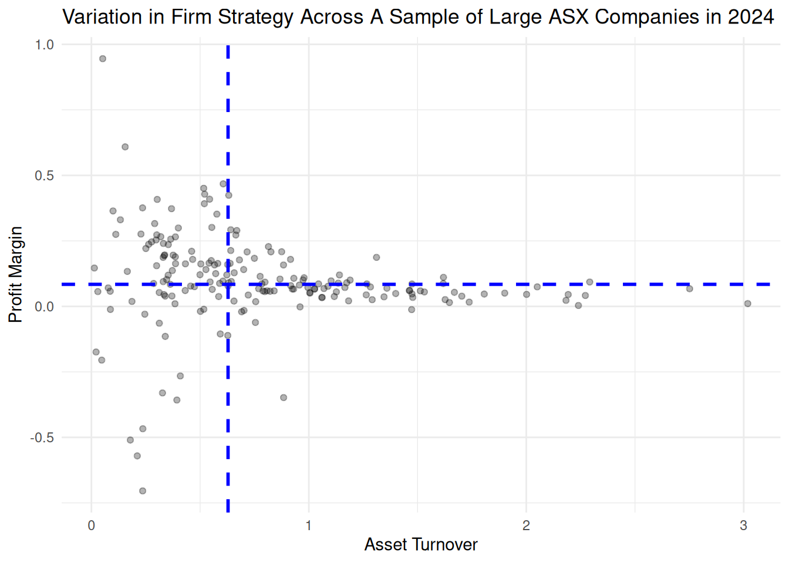
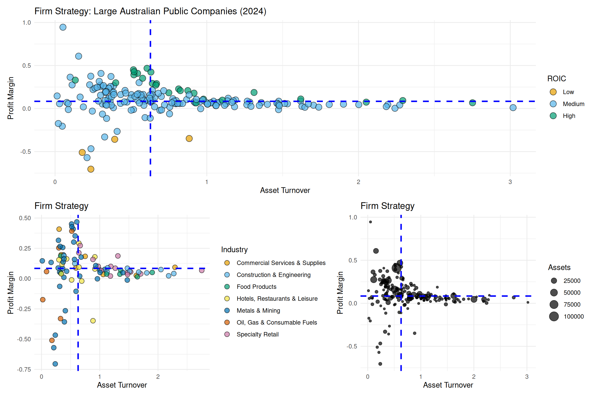
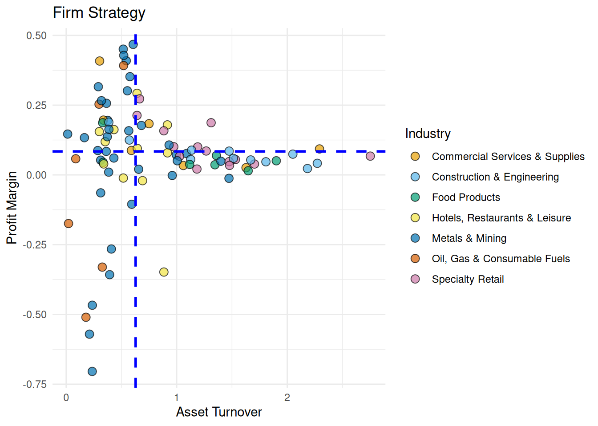
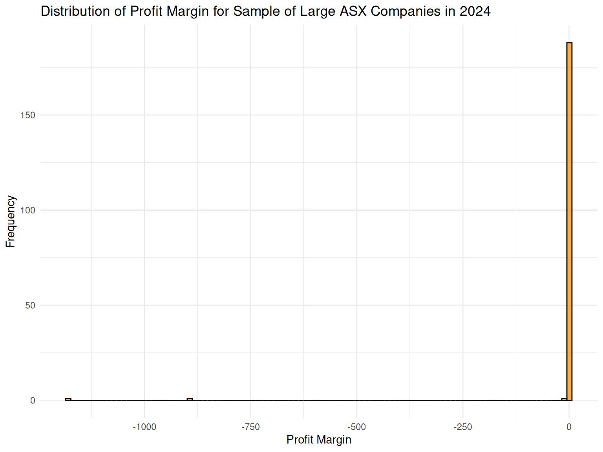
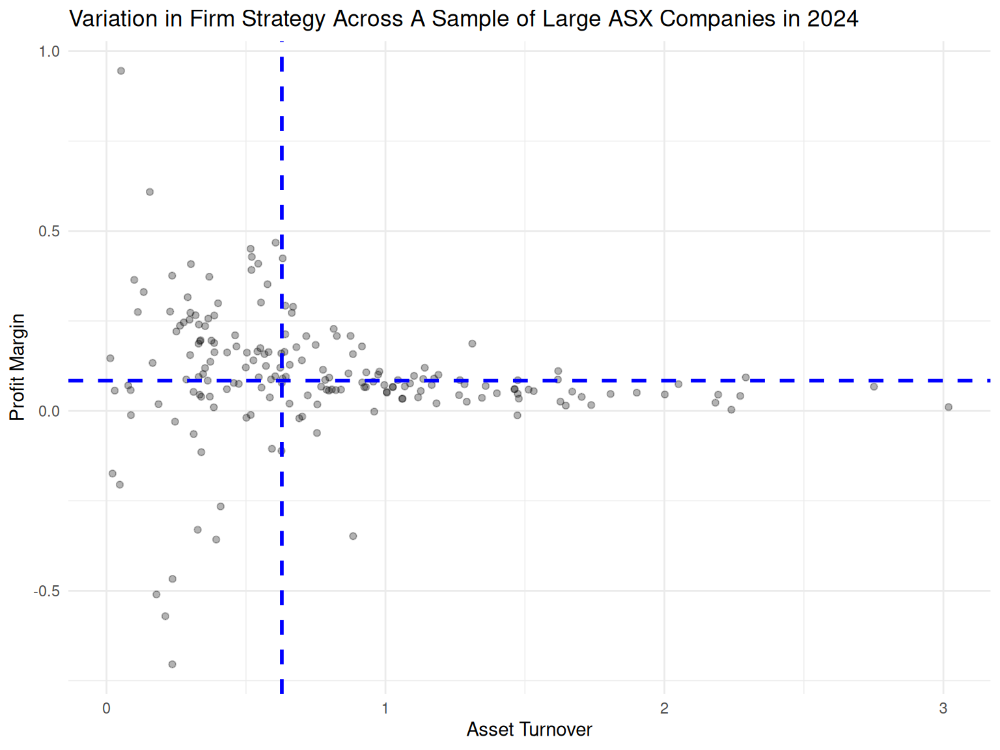
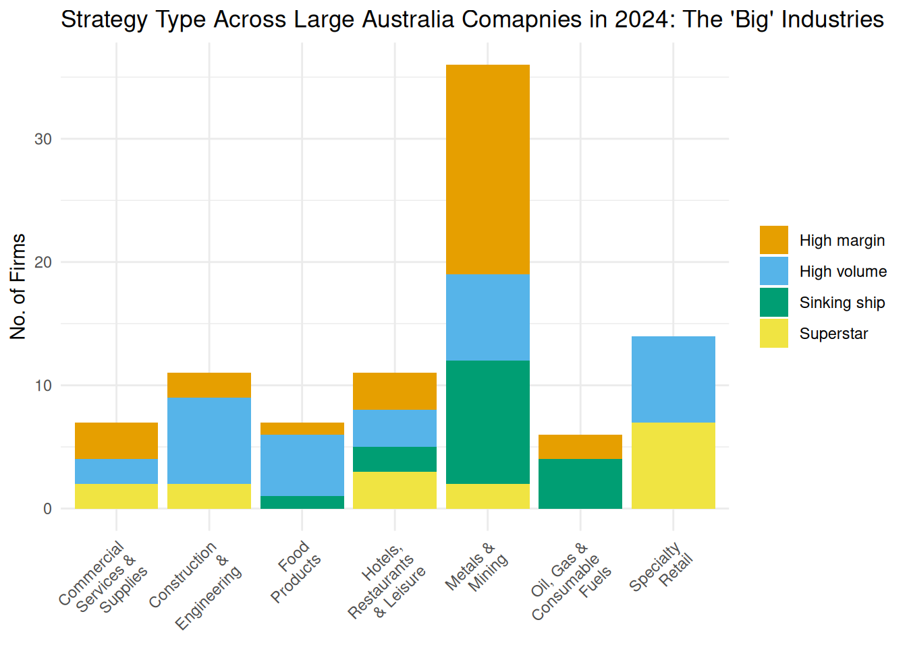

# A tibble: 10 × 30
gvkey curcd fyear fyr datadate at capx shareequity dlc dltt dvp
<chr> <chr> <dbl> <dbl> <chr> <dbl> <dbl> <dbl> <dbl> <dbl> <dbl>
1 013312 USD 2024 6 6/30/20… 102362 9273 49120 2084 18634 NA
2 210216 AUD 2024 6 6/30/20… 45550 2288 17352 4228 12740 NA
3 223003 USD 2024 6 6/30/20… 38022 849 19401 944 11239 NA
4 212650 AUD 2024 6 6/30/20… 36694 104 11678 1590 18596 NA
5 100894 AUD 2024 6 6/30/20… 33936 2548 5570 2311 14411 NA
6 212427 USD 2024 6 6/30/20… 30060 2834 19531 192 5208 NA
7 101601 AUD 2024 6 6/30/20… 27309 923 8585 1165 10113 NA
8 226744 AUD 2024 6 6/30/20… 20894 754. 5275. 606. 10332. NA
9 220244 AUD 2024 6 6/30/20… 20564 2761 294 600 5991 NA
10 017525 AUD 2024 6 6/30/20… 20454 608 9489 68 3310 NA
# ℹ 19 more variables: ebit <dbl>, netprofit <dbl>, pstk <dbl>, sale <dbl>,
# epsexcon <dbl>, nicon <dbl>, conm <chr>, fic <chr>, conml <chr>,
# ggroup <dbl>, gind <dbl>, gsector <dbl>, gsubind <dbl>, sector <chr>,
# indgroup <chr>, industry <chr>, subind <chr>, debt <dbl>,
# invested_capital <dbl>Tutorial 4: Data Wrangling for Business Analytics
Learning Goals
By the end of this tutorial, you should be able to:
- Calculate and interpret key financial metrics – Use
mutate()to create measures such as profit margin, asset turnover, and ROIC, and explain what these reveal about a firm’s strategic approach.
- Visualise variable distributions – Use
ggplot2to produce and interpret histograms for financial ratios, identify issues such as outliers, and explain how data pruning affects interpretation.
- Explore relationships between firm strategy variables – Create scatterplots to examine how profit margin and asset turnover interact, and classify firms into strategy types (e.g., high margin, high volume, superstar, sinking ship).
- Identify and profile firms at distribution extremes – Use
filter(),arrange(),select(), andslice_max()to locate firms with exceptional margins, volumes, or profitability, and interpret these outliers in context.
- Analyse strategy by grouping variables – Apply
group_by()andsummarise()to compare strategy types across industries, firm sizes, and profitability tiers.
- Present comparative visualisations – Use faceted scatterplots, size/colour encodings, and stacked bar charts to reveal variation in firm strategy across sectors and performance categories.
The Business Challenge
The Topic: Understanding firm strategy in the Australian economy
In the lecture, we examined the level of firms’ profits and the efficiency with which firms use investors’ capital to produce these profits (i.e., returns as a measure of profitability). However, we have yet to examine variation in ‘how’ firms produce profits. Broadly speaking, firms can pursue one of two strategies. Firms can employ a high-margin, low-volume strategy, or a low-margin, high-volume strategy. The former rely on pricing power or operational efficiencies that drive down costs in order to produce more profit per unit of good or services sold. The latter rely on scaling up operations and distribution in order to sell at very high volumes goods or services that provide much less profit per unit.
We calculate a firm’s profit margin as follows:
\[ \mathrm{Profit\ Margin} = \frac{\mathrm{EBIT}}{\mathrm{Sales}} \]
Firms that effectively employ a high-margin, low-volume strategy have high profit margins (i.e., these firms generate more profit from each dollar of sales).
We calculate a firm’s asset turnover as follows:
\[ \mathrm{Asset\ Turnover} = \frac{\mathrm{Sales}}{\mathrm{Assets}} \]
Firms that effectively employ a low-margin, high-volume strategy have high asset turnover (i.e., these firms generate more sales from a given asset base).
In the following exercises we will explore research questions such as the following:
- How does firm strategy vary by firm size and industry?
- Do we observe companies that successfully maintain high margins and high volumes, and if so, which types of companies fall into this category?
- Do we observe the inverse-i.e., companies that suffer from low margins and low volume?
- And, perhaps most importantly, how does firm strategy relate to profitability?
The Data: Financial Statement Observations from Yahoo Finance
To answer these questions, we draw on audited 2024 financial statements for the 200 largest ASX-listed firms (as measured by assets). This data set should be familiar to you from the lecture.
Financial statements provide a standardised snapshot of a company’s performance and financial health. In our data set, the key variables are:
- Company name (
conml) – the name of the firm as listed on the ASX
- Industry (
industry) – the industry classification, allowing comparison across sectors such as mining, banking, or healthcare
- Profit (
ebit) – earnings before interest and taxes, representing core business profit after expenses (from the income statement)
- Assets (
at) – the total resources the company owns that have economic value (from the balance sheet)
- Invested Capital (
invested_capital) – the total capital invested in the company by both shareholders and debt holders to fund operations and growth. It generally includes:- Equity (
shareequity) – the funds contributed by shareholders plus retained earnings
- Interest-bearing debt (
dlc,dltt,dvp) – loans and borrowings the company uses for financing
- Equity (
By working with these statements and variables, we can replicate the kind of assessments that professional analysts and fund managers use to guide billion-dollar investment decisions.
As you will see, just a few lines of R code can wrangle raw financial statements information into orderly data that we can effectively visualize.
From this:
To this:

Loading the Data
R packages for today
library(tidyverse) # collection of packages for data manipulation and visualization
library(scales) # for formatting and transforming axis scales
library(ggokabeito) # color blind friendly color palette — this course's default
library(ggthemes) # additional ggplot themes for polished, publication-ready plots
library(patchwork) # for combining multiple ggplots into one figure
library(stringr) # for working with strings using consistent functions
library(RColorBrewer) # color paletteLoading the Data in R
asx_200_2024 <-
read_csv("data/asx_200_2024.csv")Exercise 1: Visualizing the distributions of profit margin and asset turnover
Our objective is to create the following plots:

(a). Before creating these plots yourself, let’s think about what we can learn from them. Based on the figure above, what is the profit margin of the typical firm in our sample? How about asset turnover? Given what you know about the types of firm strategy, how do you expect a firm’s position in profit margin distribution to relate to its position in the asset turnover distribution?
(b). Let’s get started on building these plots. First, we need to create two new variables-profit_margin, and asset_turnover-and store these in a new data frame (which we will use for the rest of this week’s exercises). As we did in the lecture, we will also create our measure of firm profitability-roic-so that we can study returns in subsequent exercises. Use the starter code below to create these variables. Replace FUNCTION_NAME and YOUR_VARIABLE_NAME with the appropriate function and variable names.
firm_strategy <-
asx_200_2024 |>
# Drop observations where we would have to divide by zero when calculating our new variables
FUNCTION_NAME(invested_capital > 0 & at > 0 & sale > 0) |>
# Create new variables
FUNCTION_NAME(
roic = YOUR_VARIABLE_NAME / YOUR_VARIABLE_NAME,
profit_margin = YOUR_VARIABLE_NAME / YOUR_VARIABLE_NAME,
asset_turnover = YOUR_VARIABLE_NAME / YOUR_VARIABLE_NAME
)(c). Next, we want to check that we have correctly created these new variables, profit_margin, and asset_turnover. To do so, create a short, narrow table that focuses on these variables and their components for a small subset of firms in our sample (in this case, the first 10 observations). Using this table, we can then visually check that each variable is calculated as per the formula above. Use the starter code below to create and display such a table. Replace YOUR_DATAFRAME_NAME and YOUR_FUNCTION_NAME with the appropriate data frame and function names.
YOUR_DATAFRAME_NAME |>
YOUR_FUNCTION_NAME(conml, ebit, at, sale, profit_margin, asset_turnover) |>
YOUR_FUNCTION_NAME(10) Your table should look like this:
# A tibble: 10 × 6
conml ebit at sale profit_margin asset_turnover
<chr> <dbl> <dbl> <dbl> <dbl> <dbl>
1 BHP Group Ltd 22771 102362 55658 0.409 0.544
2 Telstra Group Limited 3712 45550 22928 0.162 0.503
3 CSL Ltd 3896 38022 14690 0.265 0.386
4 Transurban Group 1132 36694 4119 0.275 0.112
5 Woolworths Group Ltd 3100 33936 67922 0.0456 2.00
6 Fortescue Ltd 8520 30060 18220 0.468 0.606
7 Wesfarmers Ltd 3849 27309 44189 0.0871 1.62
8 Ramsay Health Care Ltd 939. 20894 16660. 0.0563 0.797
9 Qantas Airways Ltd 2198 20564 20114 0.109 0.978
10 Origin Energy Ltd 952 20454 16138 0.0590 0.789(d). Now, we can plot profit_margin, and asset_turnover and see how they behave for our sample of firms. To do so, we will first create a basic histogram that visualizes the distribution of profit_margin. Use the starter code below to produce this plot. Replace YOUR_DATAFRAME_NAME, YOUR_FUNCTION_NAME and YOUR_VARIABLE with the appropriate data frame, function, and variable names.
YOUR_DATAFRAME_NAME |>
YOUR_FUNCTION_NAME(aes(x = YOUR_VARIABLE)) +
YOUR_FUNCTION_NAME(fill = "darkorange", color = "black",
alpha = 0.7, bins = 100) +
labs(title = "Distribution of Profit Margin for Sample of Large ASX Companies in 2024",
x = YOUR_LABEL,
y = YOUR_LABEL
) +
theme_minimal() Your plot should look like this:

(e). Oops! Examining this histogram plot, what issue do you notice with the data that complicates plotting the distribution of profit_margin? How do you suggest we address this issue in the data, and what do we gain and lose by doing so?
(f). Now, let’s move on to our other new variable. Let’s create a basic histogram that visualizes the distribution of asset_turnover. Use the starter code below to produce this plot. Replace YOUR_DATAFRAME_NAME, YOUR_FUNCTION_NAME and YOUR_VARIABLE with the appropriate data frame, function, and variable names.
YOUR_DATAFRAME_NAME |>
YOUR_FUNCTION_NAME(aes(x = YOUR_VARIABLE)) +
YOUR_FUNCTION_NAME(fill = "skyblue", color = "black",
alpha = 0.7, bins = 100
) +
labs(title = "Distribution of Asset Turnover for Sample of Large ASX Companies in 2024",
x = YOUR_LABEL,
y = YOUR_LABEL
) +
theme_minimal()Your plot should look like this:
(g). This looks better! Examining the plot above, explain why we don’t have the issue that complicated plotting the distribution of profit margin.
Exercise 2: Firm Strategy and The Profit Margin - Asset Turnover Relationship
Our objective is to create the following plot:

(a). In exercise 1, you used histograms to show the distributions of profit_margin and asset_turnover. Use the starter code below to identify the five firms in the right tail of each of these distributions-i.e., those firms that have the highest profit margins, and those firms that have the highest asset turnover.
To help, we have included the table that your code should output for profit_margin:
# A tibble: 5 × 8
conml industry ebit at sale profit_margin asset_turnover roic
<chr> <chr> <dbl> <dbl> <dbl> <dbl> <dbl> <dbl>
1 Aft Corpora… Buildin… 28.8 585. 3.04e1 0.945 0.0520 0.0494
2 APA Group Gas Uti… 1850 19563 3.04e3 0.609 0.155 0.114
3 Fortescue L… Metals … 8520 30060 1.82e4 0.468 0.606 0.342
4 Perseus Min… Metals … 462. 1986. 1.03e3 0.451 0.517 0.259
5 Emerald Res… Metals … 159. 712. 3.71e2 0.428 0.521 0.262 # Replicate the profit margin table
firm_strategy |>
# slice_max is a concise alternative to using arrange() then head()
slice_max(YOUR_VARIABLE_NAME, n = 5) |>
select(YOUR_VARIABLE_NAME, ..., YOUR_VARIABLE_NAME)# Produce the equivalent table for asset turnover
firm_strategy |>
# slice_max is a concise alternative to using arrange() then head()
slice_max(YOUR_VARIABLE_NAME, n = 5) |>
select(YOUR_VARIABLE_NAME, ..., YOUR_VARIABLE_NAME)(b). Do we observe differences in industries or firm size across these tables? Are the same or different firms present across these tables? How do profit margin and asset turnover appear to be related and what does this reveal about firm strategy?
(c). Next, we want to create a new variable that classifies each firm in our sample as one of the following strategy types:
- IF above median profit margin AND below median asset turnover THEN, strategy type = ‘High margin’
- IF below median profit margin AND above median asset turnover THEN, strategy type = ‘High volume’
Some firms may fail to meet the conditions for either of these categories. Classify these firms as follows:
- IF below median profit margin AND below median asset turnover THEN, strategy type = ‘Sinking ship’
- IF above median profit margin AND above median asset turnover THEN, strategy type = ‘Superstar’
Use the starter code below to create the variable strategy_type and so classify each firm’s strategy type. Replace YOUR_DATAFRAME, YOUR_FUNCTION_NAME and YOUR_VARIABLE_NAME as appropriate.
YOUR_DATAFRAME <-
firm_strategy |>
YOUR_FUNCTION_NAME(
strategy_type = case_when(
# Case 1: High Margin
profit_margin >= median(profit_margin, na.rm = TRUE) &
asset_turnover < median(asset_turnover, na.rm = TRUE) ~ "High margin",
# Case 2: High Volume
YOUR_VARIABLE_NAME < median(YOUR_VARIABLE_NAME, na.rm = TRUE) &
YOUR_VARIABLE_NAME >= median(YOUR_VARIABLE_NAME, na.rm = TRUE) ~ "High volume",
# Case 3: Sinking Ship
YOUR_VARIABLE_NAME < median(YOUR_VARIABLE_NAME, na.rm = TRUE) &
YOUR_VARIABLE_NAME < median(YOUR_VARIABLE_NAME, na.rm = TRUE) ~ "Sinking ship",
# Case 4: Superstar
YOUR_VARIABLE_NAME >= median(YOUR_VARIABLE_NAME, na.rm = TRUE) &
YOUR_VARIABLE_NAME >= median(YOUR_VARIABLE_NAME, na.rm = TRUE) ~ "Superstar",
# Default : catch any unmatched cases
.default = NA_character_
)
)(d). To shed light on how the above ‘works’, run the code below and explain what each part of the code ‘does’ to the output. What must be the case for a firm’s strategy type to be classified as ‘High margin’? How is a firm’s strategy type classified if this is not the case? What value does strategy type take if only one of these conditions holds?
firm_strategy |>
mutate(
strategy_type = case_when(
# Case 1:
profit_margin >= median(profit_margin, na.rm = TRUE) &
asset_turnover < median(asset_turnover, na.rm = TRUE) ~ "High margin",
# Case 2:
is.na(profit_margin) | is.na(asset_turnover) ~ NA_character_,
# Other cases -- the default:
.default = "Other"
)
) |>
select(conml, profit_margin, asset_turnover, strategy_type) |>
head(10)(e). Now, we can examine the relationship between profit margin, asset turnover, and firm strategy. Use the starter code below to create a basic scatterplot of profit margin vs asset turnover. Replace the placeholder code (e.g., YOUR_DATAFRAME) as appropriate.
YOUR_DATAFRAME |>
# To improve our visualization, we need to focus on representative
# firms and drop outliers (see exercises 1 & 4 for more)
filter(profit_margin > -2) |>
YOUR_FUNCTION_NAME() +
YOUR_FUNCTION_NAME(
aes(y = YOUR_VARIABLE_NAME, x = YOUR_VARIABLE_NAME),
alpha = 0.3
) +
# Add a vertical line to show median value
geom_vline(xintercept = median(YOUR_DATAFRAME$YOUR_VARIABLE_NAME, na.rm = TRUE),
linetype = "dashed", color = "blue", size = 1
) +
# Add a horizontal line to show median value
geom_hline(yintercept = median(YOUR_DATAFRAME$YOUR_VARIABLE_NAME, na.rm = TRUE),
linetype = "dashed", color = "blue", size = 1
) +
theme_minimal() +
labs(title = "Variation in Firm Strategy Across A Sample of Large ASX Companies in 2024",
x = YOUR_LABEL,
y = YOUR_LABEL
) +
guides(color = guide_legend(title = NULL))You plot should look like this:

(f). Nice! We can learn a lot from this plot, but to start let’s return to an earlier question we considered: How do profit margin and asset turnover appear to be related and what does this reveal about firm strategy? Explain why we have few firms in the top right? And why we have few firms in the bottom left?
Exercise 3: Firm Strategy: Industry, Size, and Profitability
Our objective is to create the following plots:

(a). Examine the plot below that captures how the relationship between profit margin and asset turnover varies with industry (as the code shows, this plot focuses on the ‘big’ industries that we covered in the lecture material). Explain how this plot is consistent with your findings in the last part of the previous question.
big_industries <- c("Metals & Mining", "Specialty Retail", "Construction & Engineering",
"Hotels, Restaurants & Leisure", "Oil, Gas & Consumable Fuels",
"Commercial Services & Supplies", "Food Products")
scatter_ind <-
firm_strategy |>
filter(profit_margin > -2 & industry %in% big_industries) |>
ggplot() +
geom_point(aes(x = asset_turnover, y = profit_margin, fill = industry),
alpha = 0.7, shape = 21, size = 3
) + # shape = 21 allows filling
geom_vline(xintercept = median(firm_strategy$asset_turnover, na.rm = TRUE),
linetype = "dashed", color = "blue", size = 1
) +
geom_hline(yintercept = median(firm_strategy$profit_margin, na.rm = TRUE),
linetype = "dashed", color = "blue", size = 1
) +
scale_fill_okabe_ito() +
theme_minimal() +
labs(title = "Firm Strategy",
x = "Asset Turnover",
y = "Profit Margin") +
guides(color = guide_legend(title = NULL),
fill = guide_legend(title = "Industry"))
scatter_ind
(b). Use the starter code provided below to produce a scatter plot that captures how the relationship between profit margin and asset turnover varies with firm size (at). How does this plot show differences in firm size? Explain what this plot reveals about the relationship between firm size and strategy.
scatter_size <-
YOUR_DATAFRAME |>
filter(profit_margin > -2) |>
ggplot() +
YOUR_FUNCTION_NAME(aes(x = asset_turnover, y = profit_margin,
size = YOUR_VARIABLE_NAME
),
alpha = 0.7, color = "black"
) +
geom_vline(xintercept = median(firm_strategy$asset_turnover, na.rm = TRUE),
linetype = "dashed", color = "blue", size = 1
) +
geom_hline(yintercept = median(firm_strategy$profit_margin, na.rm = TRUE),
linetype = "dashed", color = "blue", size = 1
) +
theme_minimal() +
labs(title = "Firm Strategy",
x = "Asset Turnover",
y = "Profit Margin"
) +
guides(color = guide_legend(title = NULL),
size = guide_legend(title = "YOUR_VARIABLE_NAME")
)
scatter_size(c). Use the starter code below to produce a scatter plot that captures how the relationship between profit margin and asset turnover varies with firm profitability (roic). Explain what this plot reveals about the relationship between firm strategy and profitability. What seems to ‘hurt’ firm performance more: weak margins, or weak volume?
scatter_return <-
YOUR_DATAFRAME |>
filter(profit_margin > -2) |>
ggplot() +
YOUR_FUNCTION_NAME(aes(x = asset_turnover, y = profit_margin,
fill = cut(YOUR_VARIABLE_NAME,
breaks = 3, labels = c("Low", "Medium", "High")
)
),
alpha = 0.7, shape = 21, color = "black", size = 4
) +
geom_vline(xintercept = median(firm_strategy$asset_turnover, na.rm = TRUE),
linetype = "dashed", color = "blue", size = 1
) +
geom_hline(yintercept = median(firm_strategy$profit_margin, na.rm = TRUE),
linetype = "dashed", color = "blue", size = 1
) +
scale_fill_okabe_ito() +
theme_minimal() +
labs(title = "Firm Strategy: Large Australian Public Companies (2024)",
x = "Asset Turnover",
y = "Profit Margin"
) +
guides(color = guide_legend(title = NULL),
fill = guide_legend(title = "ROIC")
)
scatter_return(d). Write a short chunk of code that integrates the three plots you created above into a single figure. Use the patchwork package to do this.
# Write your answer hereExercise 4: Identifying and removing outliers to improve the profit margin histogram
In exercise 1, we created the following plot:

(a). We have two extreme observations in the left tail of our distribution. Create a short, narrow table that isolates these observations and shows only the sub-set of variables that relate to profit margin and asset turnover. Using this table, explains why these firms have such extreme (negative) profit margins. Use the starter code below to create and display such a table.
YOUR_DATAFRAME |>
YOUR_FUNCTION_NAME(YOUR_VARIABLE_NAME) |>
YOUR_FUNCTION_NAME(2) |>
YOUR_FUNCTION_NAME(conml, industry, ebit, at, sale, profit_margin, asset_turnover)(b). These extreme observations badly drag out our distribution’s left tail, and so compress our visualization of the rest of the distribution (i.e., the vast majority of firms in our sample are pushed into a single column even though there is much variation in these firms’ profit margins). Use the starter code below to remove these outliers from our sample and then create a basic histogram that visualizes the distribution of profit for our ‘pruned’ sample.
YOUR_DATAFRAME |>
YOUR_FUNCTION_NAME(YOUR_VARIABLE_NAME > YOUR_LOWER_BOUND_VALUE) |>
YOUR_FUNCTION_NAME(aes(x = YOUR_VARIABLE_NAME)) +
YOUR_FUNCTION_NAME(fill = "darkorange", color = "black",
alpha = 0.7, bins = 100
) +
labs(title = "Distribution of Profit Margin for Sample of Large ASX Companies in 2024",
x = YOUR_LABEL,
y = YOUR_LABEL
) +
theme_minimal() (c). Hmm! Explain whether you think the plot above effectively visualizes the distribution of profit margin for large Australian public companies. Do we still have extreme observations in our left tail? How do these affect what we can learn about the majority of firms, which exhibit profit margins >= 0?
(d). Use the starter code below to further ‘prune’ our sample and so again visualize the distribution of profit margin for large Australian public companies. Do we now get a better sense of our how profit margin is distributed across large Australian companies?
YOUR_DATAFRAME |>
YOUR_FUNCTION_NAME(YOUR_VARIABLE_NAME > YOUR_HIGHER_LOWER_BOUND_VALUE) |>
YOUR_FUNCTION_NAME(aes(x = YOUR_VARIABLE_NAME)) +
YOUR_FUNCTION_NAME(fill = "darkorange", color = "black",
alpha = 0.7, bins = 100
) +
labs(title = "Distribution of Profit Margin for Sample of Large ASX Companies in 2024",
x = YOUR_LABEL,
y = YOUR_LABEL
) +
theme_minimal() (e). Using the plot produced above, what would you consider to be the typical large Australian company’s profit margin? What would you consider a high-margin firm to be? Explain why it is not possible for the distribution of profit margin to have a very long right tail (i.e., firms that enjoy extremely large profit margins)?
Exercise 5: Unpacking the Profit Margin-Asset Turnover Scatterplot
In exercise 2, we created the following plot:

(a). Refer to the above plot. Firms that employ a ‘high margin’ strategy are located in which quadrant? Firms that employ which strategy are located in the bottom-right quadrant?
(b). One way to ‘check’ your answers to the above question is to use color to identify each firm’s strategy type. Use the starter code below and explain what the plot reveals.
YOUR_DATAFRAME |>
YOUR_FUNCTION_NAME(profit_margin > -2) |>
YOUR_FUNCTION_NAME() +
YOUR_FUNCTION_NAME(aes(x = YOUR_VARIABLE_NAME, y = YOUR_VARIABLE_NAME,
fill = YOUR_VARIABLE_NAME
),
alpha = 0.7, shape = 21, size = 3, color = "black"
) +
geom_vline(xintercept = median(YOUR_DATAFRAME$YOUR_VARIABLE_NAME, na.rm = TRUE),
linetype = "dashed", color = "blue", size = 1
) +
geom_hline(yintercept = median(YOUR_DATAFRAME$YOUR_VARIABLE_NAME, na.rm = TRUE),
linetype = "dashed", color = "blue", size = 1
) +
scale_fill_okabe_ito() +
theme_minimal() +
labs(title = "Variation in Firm Strategy Across A Sample of Large ASX Companies in 2024",
x = YOUR_LABEL,
y = YOUR_LABEL
) +
guides(color = guide_legend(title = NULL),
fill = guide_legend(title = YOUR_LABEL))(c). Run the first block of code provided below. Which firm from the plot above does this code identify? Run the second block of code provided below. And, which firm from the plot above does this code identify?
firm_strategy |>
filter(strategy_type == 'High volume') |>
arrange(profit_margin) |>
select(conml, industry, ebit, at, sale, profit_margin, asset_turnover, roic) |>
head(1)firm_strategy |>
filter(strategy_type == 'High margin') |>
arrange(asset_turnover) |>
select(conml, industry, ebit, at, sale, profit_margin, asset_turnover, roic) |>
head(1)(d). The plots above show that some strategy types are more common than others among our sample of large ASX companies in 2024. Use the starter code below that provides the count of observations for each strategy type in our sample. Which strategy type is more common, high margin or high volume?
YOUR_DATAFRAME |>
YOUR_FUNCTION_NAME(profit_margin > -2) |>
group_by(YOUR_VARIABLE_NAME) |>
YOUR_FUNCTION_NAME(obs = n())(e). Let’s dig down into one of these firm strategy types, High margin. Write and run a chunk of code that counts the number of firms from each industry that employ a high-margin strategy. Write your code such that it outputs a table that shows the five industries with the highest counts. Which industry accounts for the most high-margin firms in our sample?
# Write your answer here(f). Now, write and run a chunk of code that produces the equivalent table but for firms that employ a high-volume strategy. Compare this table to the one you produced in the previous question.
# Write your answer here(g). In the lecture, we examined firms from the ASX’s ‘big industries’ (i.e., the seven industries that account from more than half of all large listed firms in Australia). Let’s gain some insight into how strategy type varies within each of these big industries. Use the starter code below to produce a stacked bar plot that shows the share of each industry’s firms that employ a given strategy type. What are the main insights that this plot reveals? Which industries have the most variation in strategy type? The least?
YOUR_DATAFRAME |>
# Use %in% for filtering industries
YOUR_FUNCTION(profit_margin > -2 & industry %in% big_industries) |>
# Group by both industry and strategy_type
group_by(YOUR_VARIABLE_NAME, YOUR_VARIABLE_NAME) |>
# Count the number of occurrences for each strategy_type within each industry
YOUR_FUNCTION_NAME(count = n(), .groups = 'drop') |>
# Map 'industry' to x-axis and 'strategy_type' to fill
ggplot(aes(x = YOUR_VARIABLE_NAME, y = YOUR_VARIABLE_NAME, fill = YOUR_VARIABLE_NAME)) +
geom_bar(stat = "identity") +
theme_minimal() +
# Rotate and align x-axis labels
theme(axis.text.x = element_text(angle = 45, hjust = 1, vjust = 1),
# Remove the legend title
legend.title = element_blank()
) +
# Wrap x-axis labels at width 10 characters
scale_x_discrete(labels = function(x) str_wrap(x, width = 10)) +
# Use color palette for filling
scale_fill_okabe_ito() +
labs(#No label for x-axis
x = NULL,
y = "No. of Firms",
title = "Strategy Type Across Large Australia Comapnies in 2024: The 'Big' Industries"
) Your plot should look like this:
